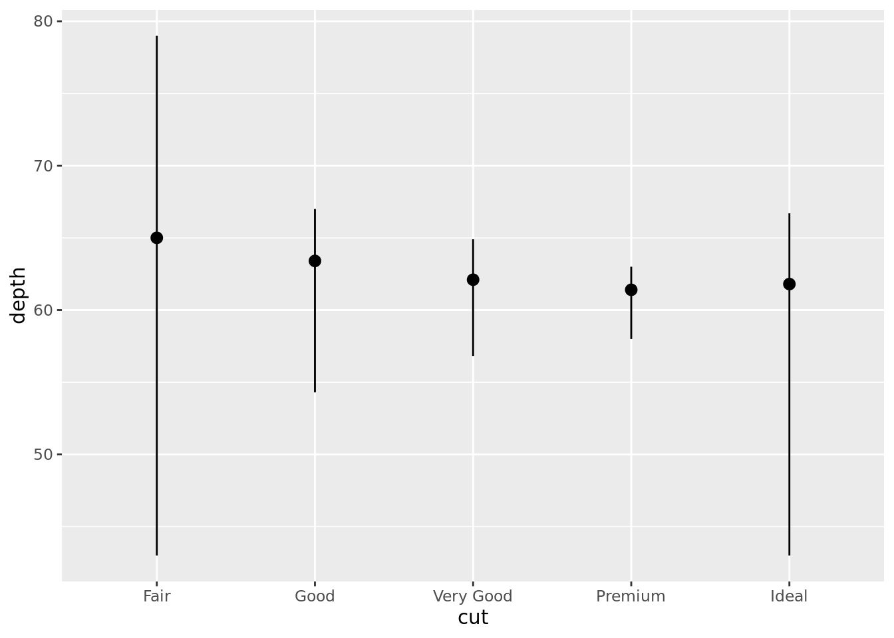

# Loading Packages
library(tidyverse)Statistical Transformations
Exercise Solutions
Question 1
NoteNote
The Problem
What is the default geom associated with stat_summary()? How could you rewrite code below to use that geom function instead of the stat function?
ggplot(diamonds) +
stat_summary(
aes(x = cut, y = depth),
fun.min = min,
fun.max = max,
fun = median
)
The Solution
The default geom for stat_summary() is "pointrange". To use geom_pointrange() instead of stat_summary, we add stat = "summary".
ggplot(diamonds) +
geom_pointrange(
aes(x = cut, y = depth),
stat = "summary",
fun.min = min,
fun.max = max,
fun = median
)